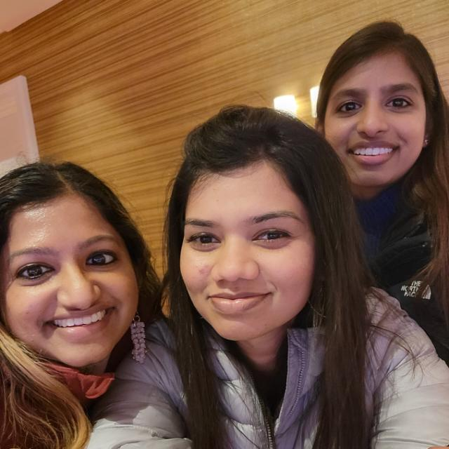
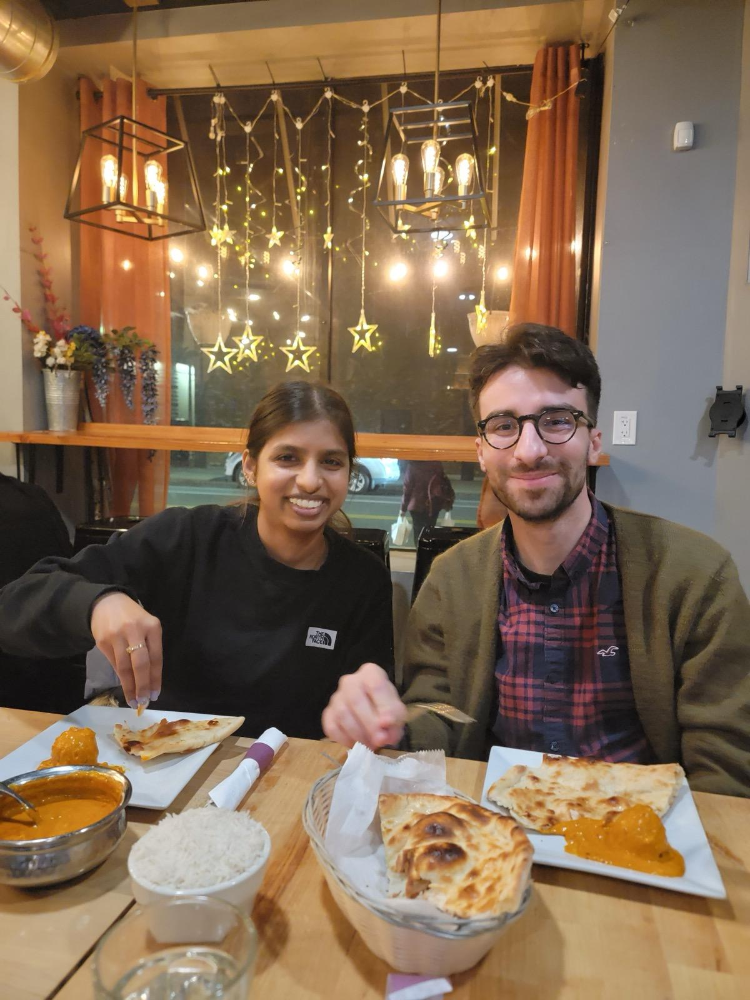

✨ Sharing our best memories on your special day ✨
Reconnecting with Christy in 2021 and meeting you all at Queens in 2022 🥂
I still remember you introducing Mark at a traffic intersection near your home 🚦
and how I hesitantly said he looks like young Daniel Radcliff 😂
Drive to Brooklyn 🚙
Meeting Sugi and your cousins
Going to Edge, Long Island 🗽
Temple canteen food and having a blast eating all the amazing food your mom
prepared 🍲
Our Comedy Timing, Vijay fandom, Tamil movie references, gossips and endless talking till 3 am
with same energy...
and Christy texting us to shut up and sleep 😴
Its like meeting a twin 👯
I remember feeling for the second time in my life I wish I had a sister after seeing you and Christy being there for each other during tough times and standing up for each other 🎁

🉠Movies
Well from watching Varisu together at Boston to explaining Vadachennai to me so I don't loose my patience to rewatching Thiruchitrambalam at NYC - It is a journey of laughter 😂
6 am Starbucks coffee run with Mark and Catherine ☕
Who else would join me for a 6am coffee run other than Mark - thanks to Mark for slowly pursuing you to become a morning person ☺ï¸
Welcome to Boston! Empty Prudential, Gambling at Encore, Boston tea party, best Kunafe and Pudding at Istanbul Diner cafe, Zuzu momo, Tatte, Fuji, Indian restaurant that spoiled our best day out and finally biking around MIT.. Such fun days
Marks Parents Hosting

Going to Semma, Louis Vuitton
Roasting Christy
Playing boardgames
💠My favorite pictures of the couple